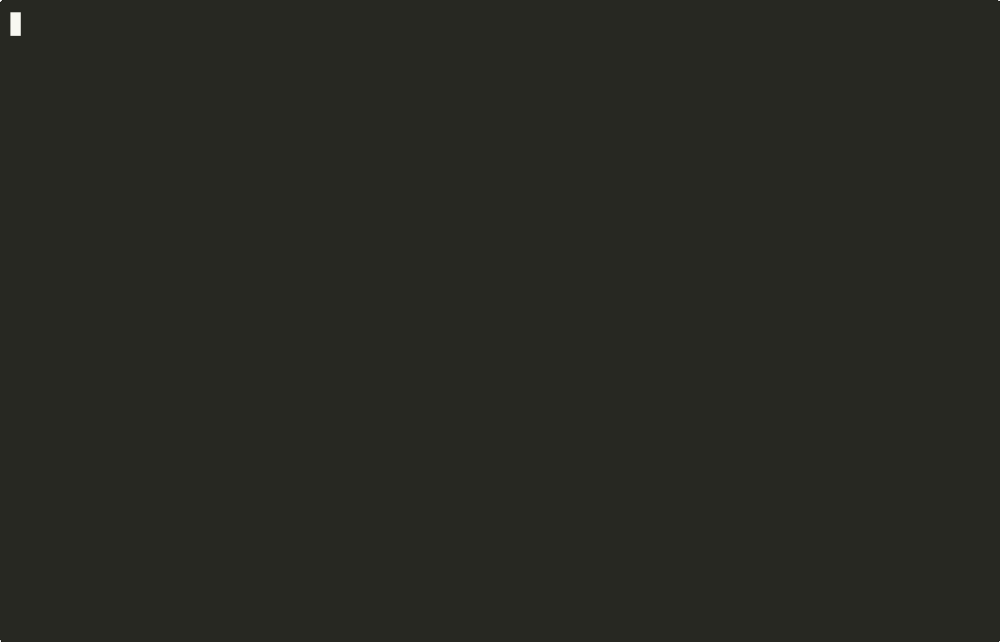

azet is an AI coding agent for your terminal. One brew command installs it, and it gets to work in the folder you are in.
brew install azet-llc/tap/azetThen cd your-project && azet and say what you want built. Free credit on the first run is opening soon; until then, start with credit from api.azet.io.

We made a fresh macOS user account with Homebrew and nothing else, cleared every download cache before each run, and timed from brew install to the first answer. Two full runs: 29.8s and 44.6s.
MacBook Pro M4 Max under a heavy build load, network in Seoul, Nov 5–6, 2026. The model's answer time is what varies most between runs.
azet reads your key from AZET_API_KEY or ~/.config/azet. Once free first-run credit opens, it fetches a trial key there for you. Your other AI tools keep their own settings.azet starts on DeepSeek V4.1 Flash. Switch any time with /model. Prices are per million tokens, charged from your credit.
| Model | Context | Input | Output |
|---|---|---|---|
| DeepSeek V4.1 Flash (default) | 1M | $0.30 | $1.20 |
| Kimi K2.6 | 262K | $0.95 | $4.00 |
| DeepSeek V4 Pro | 1M | $1.32 | $3.96 |
Yes. The launcher is MIT, owned by AZET LLC. The agent inside is our build of Pi by Mario Zechner, also MIT; the patches are in agent-build/. Both licenses and the notices for every bundled package (THIRD_PARTY_NOTICES.md) ship in the repo and in the Homebrew package.
Your prompts and the file contents the agent reads go to api.azet.io, which passes them to the model provider. Pi's usage telemetry and update checks are switched off.
Shell commands that delete files, push or publish, send data off your machine, or use sudo stop and ask you first. In -p mode, where nobody can answer, they are blocked. On macOS, azet also runs inside a sandbox by default: the agent and its commands can write only inside the folder you started in, ~/.config/azet, temp folders and package caches. Reading is not limited. Turn the sandbox off with azet --no-sandbox.
Today, yes: add credit at api.azet.io and run AZET_API_KEY=azk_... azet. Free credit on the first run is opening soon; after that, a new install needs no key.
macOS today, Apple Silicon and Intel. Linux is next. On Windows, use WSL once the Linux build lands.
One command to install. Your first task runs in the folder you already have open.
brew install azet-llc/tap/azet